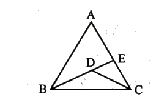

প্রাথমিক ও গণশিক্ষা মন্ত্রণালয় — সহকারী উপজেলা/থানা শিক্ষা অফিসার (ATEO) (২০০৯)
(Ministry of Primary and Mass Education - Assistant Thana/Upazila Education Officer ২০০৯)
বাংলাদেশ বিষয়াবলি (১২টি প্রশ্ন), আন্তর্জাতিক বিষয়াবলি (৭টি প্রশ্ন), সাধারণ বিজ্ঞান ও তথ্যপ্রযুক্তি (৭টি প্রশ্ন)
১০
সর্বমোট:
২০০
Part 1
প্রামাণ্য ইন্টারেক্টিভ রিভিশন নোট ও সূত্রাবলি (Authentic Sketchnotes)
📌 ১. বাংলা ব্যাকরণ ও প্রমিত বানানের পঞ্চ-সূত্র
ণত্ব ও ষত্ব বিধানের স্বর্ণালী নিয়ম:
ট-বর্গীয় ধ্বনির পূর্বে: তৎসম শব্দে সর্বদা মূর্ধন্য-ণ ও মূর্ধন্য-ষ যুক্ত হয় (যেমন: ঘণ্টা, কাণ্ড, লণ্ঠন, কষ্ট, নষ্ট, কাষ্ঠ)।
ঋ, র, ষ -এর পরে: সরাসরি বা স্বরবর্ণ, ক-বর্গ, প-বর্গ, য, ব, হ এবং অনুস্বর (ং) থাকলে পরবর্তী দন্ত্য-ন পরিবর্তিত হয়ে মূর্ধন্য-ণ হয় (যেমন: ঋণ, তৃণ, বর্ণ, হরিণ, অর্পণ, লক্ষণ, রামায়ণ)।
উপসর্গের পর: 'পরি, প্র, নির্' উপসর্গের পর ণত্ব বিধান প্রযোজ্য (যেমন: পরিণাম, প্রণয়, নির্ণয়)। কিন্তু 'পরিনির্বাণ, নির্নিমেষ' ব্যতিক্রম।
বাংলা একাডেমি প্রমিত বানানের মূল নীতি:
১. রেফের পর ব্যঞ্জনের দ্বিত্ব বর্জনীয় (সৌন্দর্য, কার্য, অর্চনা, কার্তিক)।
২. সকল দেশ, ভাষা ও জাতির নামে সর্বদা হ্রস্ব 'ই'-কার (জার্মানি, ইংরেজি, বাঙালি, ইরানি)।
৩. বিদেশি শব্দে কখনো মূর্ধন্য-ণ বা মূর্ধন্য-ষ হবে না (কর্নার, পোস্ট, স্টেশন)।
📌 ২. English High-Yield Grammar & Preposition Matrix
Rule / Confusion
Incorrect Usage
Correct Exam Standard
Underlying Concept
Sink vs Drown
The boat drowned.
The boat sank.
বস্তু বা জাহাজ পানিতে তলালে sink; সজীব প্রাণী শ্বাসরুদ্ধ হয়ে ডুবলে drown.
Poetry vs Poem
I like Nazrul's poetries.
I like Nazrul's poetry.
'Poetry' uncountable noun (no plural form); countable entity is 'poems'.
Much vs Many
He composed much essays.
He composed many essays.
Countable plural nouns take 'many'; uncountable nouns take 'much'.
Appropriate Prepositions
deviate to, believe on, jealous for
deviate from, believe in, jealous of, end in
Fixed preposition collocations frequently tested in PSC & IBA.
📌 ৩. গণিত ও জ্যামিতি সূত্রাবলি এবং প্রমাণ ট্রিকস
মূল্য বৃদ্ধি ও ব্যবহার হ্রাসের গোল্ডেন ফর্মুলা:
$$ ext{হ্রাসের হার} = \frac{r}{100 + r} imes 100\%$$
\(r = 10\%\) হলে, \(\frac{10}{110} imes 100\% = 9\frac{1}{11}\%\) বা \(9.09\%\)।
দুই অঙ্কের সংখ্যা ও স্থান বিনিময়:
সংখ্যা \(= 10y + x\); স্থান বিনিময় \(= 10x + y\)
অঙ্কদ্বয়ের পার্থক্য: \(x - y = \frac{ ext{যোগকৃত সংখ্যা}}{9} = \frac{27}{9} = 3\)।
ত্রিভুজের অসমতা ও অন্তঃস্থ বিন্দু উপপাদ্য:
যেকোনো \(\Delta\)-এর দুই বাহুর যোগফল তৃতীয় বাহু অপেক্ষা বৃহত্তর।
\(\Delta ABC\)-এর অন্তঃস্থ যেকোনো বিন্দু \(D\) হলে: \(AB + AC > BD + CD\)। প্রমাণ কৌশল: \(BD\)-কে \(E\) পর্যন্ত বর্ধিত করে \(\Delta ABE\) এবং \(\Delta DEC\) যোগ করলেই \(DE\) বাদ গিয়ে কাঙ্ক্ষিত অসমতা পাওয়া যায়।
📌 ৪. বাংলাদেশ, আন্তর্জাতিক ও সাধারণ বিজ্ঞান স্মারক তথ্যমালা
বিচার বিভাগ পৃথকীকরণ: সংবিধানের ২২ অনুচ্ছেদ; কার্যকর হয় ১ নভেম্বর ২০০৭ (তত্ত্বাবধায়ক সরকারের সময়, মাসদার হোসেন মামলার রায় অনুযায়ী)।
জাতীয় সংগীতের অনুচ্ছেদ ও চরণ: সংবিধানের ৪.১ অনুচ্ছেদ; রাষ্ট্রীয় অনুষ্ঠানে যন্ত্রসংগীতে প্রথম ৪ চরণ, আর কণ্ঠসংগীতে প্রথম ১০ চরণ।
ক্যাম্প ডেভিড চুক্তি: ১৭ সেপ্টেম্বর ১৯৭৮; মিশর (আনোয়ার সাদাত) ও ইসরাইল (মেনাখেম বেগিন); মধ্যস্থতাকারী মার্কিন প্রেসিডেন্ট জিমি কার্টার।
রক্তচাপ ও সিসমোগ্রাফ: সুস্থ মানুষের আদর্শ রক্তচাপ ১২০/৮০ mmHg (সিস্টোলিক ১২০ ও ডায়াস্টোলিক ৮০)। ভূমিকম্প নির্ণায়ক যন্ত্র সিসমোমিটার/সিসমোগ্রাফ; মাত্রা পরিমাপক রিখটার স্কেল।
Part 2
বিগত বছরের লিখিত প্রশ্নব্যাংক ও ইন্টারেক্টিভ কুইজ ইঞ্জিন
⏳ সময় বাকি: ১৮০:০০
মূল্যায়ন অগ্রগতি: ০ / ২৩
প্রশ্ন 1বাংলাপ্রবন্ধ রচনাপূর্ণমান: 25
যেকোনো একটি বিষয়ে প্রবন্ধ রচনা করুন:
(a) সরকারি কাজে বাংলা ভাষা ব্যবহারের বর্তমান পরিস্থিতি
(b) বিচার বিভাগের পৃথকীকরণ
(c) স্থানীয় সরকার উপজেলা চেয়ারম্যান ও ইউএনও-দের সম্পর্ক
(d) বৃষ্টিতে ভেজার আনন্দ।
স্ব-মূল্যায়ন:
বিচার বিভাগের পৃথকীকরণ
ভূমিকা: একটি প্রগতিশীল, গণতান্ত্রিক ও স্বৈরাচারমুক্ত রাষ্ট্রের অন্যতম প্রধান বৈশিষ্ট্য হলো বিচার বিভাগের পৃথকীকরণ। আধুনিক রাষ্ট্রে সরকারের তিনটি প্রধান অঙ্গ রয়েছে—আইন বিভাগ, শাসন বিভাগ ও বিচার বিভাগ। রাষ্ট্র পরিচালনার ক্ষেত্রে এই তিনটি অঙ্গের নিজস্ব ভূমিকা রয়েছে। তবে নাগরিকের অধিকার রক্ষা, ন্যায়বিচার প্রতিষ্ঠা এবং আইনের শাসন নিশ্চিত করার জন্য বিচার বিভাগকে অন্য দুটি বিভাগ থেকে স্বাধীন ও পৃথক রাখা অত্যন্ত প্রয়োজন। আইন বিভাগ ও শাসন বিভাগের প্রভাবমুক্ত থেকে বিচার বিভাগ স্বাধীনভাবে দায়িত্ব পালন করার নীতিই হলো বিচার বিভাগের পৃথকীকরণ।
বিচার বিভাগের পৃথকীকরণের ধারণা: বিচার বিভাগের পৃথকীকরণ বলতে বোঝায়, বিচার বিভাগকে আইন বিভাগ ও শাসন বিভাগের নিয়ন্ত্রণ, প্রভাব ও হস্তক্ষেপ থেকে মুক্ত রাখা। বিচারকগণ যেন কোনো ধরনের রাজনৈতিক চাপ, প্রশাসনিক প্রভাব বা ব্যক্তিগত স্বার্থ ছাড়াই কেবল সংবিধান, আইন ও ন্যায়বোধের ভিত্তিতে বিচারকার্য পরিচালনা করতে পারেন—এটাই বিচার বিভাগের পৃথকীকরণের মূল উদ্দেশ্য।
বিখ্যাত রাষ্ট্রবিজ্ঞানী মন্টেস্কু তাঁর 'The Spirit of Laws' গ্রন্থে ক্ষমতার পৃথকীকরণ নীতির কথা উল্লেখ করেন। তাঁর মতে, রাষ্ট্রের সব ক্ষমতা যদি একটি ব্যক্তি বা প্রতিষ্ঠানের হাতে কেন্দ্রীভূত হয়, তাহলে নাগরিক স্বাধীনতা বিপন্ন হয়। তাই আইন প্রণয়ন, প্রশাসন পরিচালনা ও বিচারকার্যের দায়িত্ব পৃথক প্রতিষ্ঠানের ওপর থাকা উচিত।
বিচার বিভাগের স্বাধীনতার গুরুত্ব: বিচার বিভাগের পৃথকীকরণের প্রধান উদ্দেশ্য হলো বিচার বিভাগের স্বাধীনতা নিশ্চিত করা। স্বাধীন বিচার বিভাগ ছাড়া গণতন্ত্র ও আইনের শাসন কার্যকর হতে পারে না।
আইনের শাসন প্রতিষ্ঠা: আইনের শাসন হলো গণতান্ত্রিক রাষ্ট্রের মূল ভিত্তি। স্বাধীন বিচার বিভাগ দেশের সকল নাগরিককে আইনের দৃষ্টিতে সমান অধিকার প্রদান করে এবং আইন ভঙ্গকারীদের বিরুদ্ধে ব্যবস্থা গ্রহণ করে।
নাগরিক অধিকার রক্ষা: বিচার বিভাগ নাগরিকদের মৌলিক অধিকার রক্ষার প্রধান প্রতিষ্ঠান। সরকার বা কোনো ব্যক্তি নাগরিকের অধিকার ক্ষুণ্ণ করলে বিচার বিভাগ তার প্রতিকার দিতে পারে।
ক্ষমতার অপব্যবহার রোধ: শাসন বিভাগ বা আইন বিভাগ যাতে ক্ষমতার অপব্যবহার করতে না পারে, তা নিশ্চিত করতে বিচার বিভাগ গুরুত্বপূর্ণ ভূমিকা পালন করে। বিচার বিভাগের স্বাধীনতা রাষ্ট্রীয় ক্ষমতার মধ্যে ভারসাম্য সৃষ্টি করে।
নিরপেক্ষ বিচার নিশ্চিতকরণ: বিচার বিভাগ পৃথক থাকলে বিচারকগণ কোনো ধরনের রাজনৈতিক বা প্রশাসনিক চাপ ছাড়াই নিরপেক্ষভাবে বিচার করতে পারেন। এর ফলে জনগণের বিচার ব্যবস্থার প্রতি আস্থা বৃদ্ধি পায়।
বিচার বিভাগের স্বাধীনতার অর্থ: বিচার বিভাগের স্বাধীনতা বলতে এমন একটি অবস্থাকে বোঝায়, যেখানে বিচার বিভাগ তার দায়িত্ব পালনের ক্ষেত্রে অন্য কোনো বিভাগের নিয়ন্ত্রণ বা প্রভাবের অধীন থাকে না। বিচারকগণ স্বাধীনভাবে বিচারিক সিদ্ধান্ত গ্রহণ করেন এবং তাঁদের রায় প্রদানের ক্ষেত্রে কোনো ধরনের ভয় বা চাপ কাজ করে না। অধ্যাপক গার্নারের মতে, বিচার বিভাগের স্বাধীনতা বলতে বিচারকদের রায় প্রদানের ক্ষেত্রে সব ধরনের বাহ্যিক প্রভাব থেকে মুক্ত থাকাকে বোঝায়। তবে শুধু বাহ্যিক স্বাধীনতাই যথেষ্ট নয়; বিচারকদের সততা, যোগ্যতা, প্রজ্ঞা ও নৈতিকতাও বিচার বিভাগের প্রকৃত স্বাধীনতার জন্য অপরিহার্য।
বিচার বিভাগের স্বাধীনতার রক্ষাকবচ:
বিচারক নিয়োগ পদ্ধতি: বিচার বিভাগের স্বাধীনতা অনেকাংশে নির্ভর করে বিচারক নিয়োগের পদ্ধতির ওপর। বিচারক হিসেবে যোগ্য, মেধাবী, অভিজ্ঞ ও সৎ ব্যক্তিদের নিয়োগ দিতে হবে। নিয়োগ প্রক্রিয়া যদি রাজনৈতিক প্রভাবমুক্ত না হয়, তাহলে বিচার বিভাগের স্বাধীনতা বাধাগ্রস্ত হয়। বিশ্বের বিভিন্ন দেশে বিচারক নিয়োগের জন্য বিভিন্ন পদ্ধতি প্রচলিত রয়েছে। যেমন—আইনসভা কর্তৃক নির্বাচন, জনগণের ভোটে নির্বাচন, বা বিশেষ কমিশন বা কর্তৃপক্ষের মাধ্যমে নিয়োগ। এর মধ্যে রাজনৈতিক প্রভাব কম এমন নিয়োগ পদ্ধতিই অধিক গ্রহণযোগ্য।
চাকরির স্থায়িত্ব: বিচারকদের চাকরির নিরাপত্তা থাকা প্রয়োজন। শাসন বিভাগ যদি ইচ্ছামতো বিচারকদের অপসারণ করতে পারে, তাহলে তাঁরা স্বাধীনভাবে বিচার করতে পারবেন না। তাই সংবিধানের মাধ্যমে বিচারকদের পদমর্যাদা ও চাকরির স্থায়িত্ব নিশ্চিত করা জরুরি।
পর্যাপ্ত বেতন ও সুযোগ-সুবিধা: বিচারকদের উপযুক্ত বেতন ও অন্যান্য সুযোগ-সুবিধা প্রদান করা প্রয়োজন। এতে তাঁরা আর্থিক চাপমুক্ত থেকে সততা ও নিষ্ঠার সঙ্গে দায়িত্ব পালন করতে পারেন।
বিচারিক ক্ষমতার স্বাধীনতা: বিচার বিভাগকে নিজস্ব প্রশাসনিক ও আর্থিক ক্ষমতা প্রদান করতে হবে। অন্য কোনো বিভাগ যেন বিচার বিভাগের কার্যক্রমে হস্তক্ষেপ করতে না পারে, তা নিশ্চিত করা প্রয়োজন।
বিচারকদের নিরপেক্ষতা ও নৈতিকতা: বিচার বিভাগের স্বাধীনতা শুধু সাংবিধানিক ব্যবস্থার ওপর নির্ভর করে না; বিচারকদের ব্যক্তিগত সততা, ন্যায়পরায়ণতা ও দায়িত্ববোধও গুরুত্বপূর্ণ ভূমিকা পালন করে।
বাংলাদেশে বিচার বিভাগের পৃথকীকরণ: বাংলাদেশের সংবিধানের ২২ অনুচ্ছেদে রাষ্ট্রের নির্বাহী বিভাগ থেকে বিচার বিভাগ পৃথক করার নির্দেশনা দেওয়া হয়েছে। দীর্ঘ আইনি ও সাংবিধানিক প্রক্রিয়ার পর ২০০৭ সালের ১ নভেম্বর বাংলাদেশে বিচার বিভাগ আনুষ্ঠানিকভাবে শাসন বিভাগ থেকে পৃথক হয় (ঐতিহাসিক মাসদার হোসেন মামলার রায়ের প্রেক্ষিতে)। এর ফলে নিম্ন আদালতের বিচারিক কার্যক্রমে স্বাধীনতা প্রতিষ্ঠার একটি গুরুত্বপূর্ণ ধাপ সম্পন্ন হয়। তবে বিচার বিভাগের প্রকৃত স্বাধীনতা নিশ্চিত করার জন্য এখনো প্রয়োজন রাজনৈতিক প্রভাবমুক্ত পরিবেশ, দ্রুত বিচার ব্যবস্থা, দক্ষ বিচারক নিয়োগ এবং বিচার ব্যবস্থার আধুনিকায়ন।
বিচার বিভাগের পৃথকীকরণের সমস্যা: যদিও বিচার বিভাগের পৃথকীকরণ গণতন্ত্রের জন্য অপরিহার্য, তবুও বাস্তবে কিছু সমস্যা রয়েছে। রাজনৈতিক হস্তক্ষেপ, দীর্ঘসূত্রতা, মামলার জট, বিচারক সংকট এবং অবকাঠামোগত সীমাবদ্ধতা বিচার ব্যবস্থার কার্যকারিতাকে বাধাগ্রস্ত করে। এসব সমস্যা দূর করতে হলে বিচার বিভাগের প্রশাসনিক স্বাধীনতা বৃদ্ধি, প্রযুক্তির ব্যবহার, বিচারক ও জনবলের সংখ্যা বৃদ্ধি এবং দ্রুত বিচার নিশ্চিত করার ব্যবস্থা গ্রহণ করতে হবে।
উপসংহার: বিচার বিভাগের পৃথকীকরণ একটি গণতান্ত্রিক রাষ্ট্রের অন্যতম মৌলিক শর্ত। স্বাধীন বিচার বিভাগ ছাড়া নাগরিক অধিকার রক্ষা, আইনের শাসন প্রতিষ্ঠা এবং ন্যায়ভিত্তিক সমাজ গঠন সম্ভব নয়। তাই শুধু সাংবিধানিকভাবে পৃথকীকরণ করলেই হবে না; বিচারকদের স্বাধীনভাবে কাজ করার পরিবেশ, নিরপেক্ষ নিয়োগ ব্যবস্থা এবং রাজনৈতিক প্রভাবমুক্ত বিচার ব্যবস্থা নিশ্চিত করতে হবে। তাহলেই বিচার বিভাগ জনগণের আস্থা অর্জন করবে এবং একটি সুশাসনভিত্তিক রাষ্ট্র প্রতিষ্ঠিত হবে।
প্রশ্ন 2বাংলাবাংলা ব্যাকরণপূর্ণমান: 15
যেকোনো তিনটি প্রশ্নের উত্তর দিন:
(a) সাধু ও চলিত ভাষার মূল পার্থক্যসমূহ উদাহরণসহ আলোচনা করুন।
(b) ণত্ব বিধান অথবা ষত্ব বিধানের পাঁচটি নিয়ম লিখুন।
(c) বাংলা একাডেমির প্রমিত বাংলা বানানের প্রধান ধারাগুলো আলোচনা করুন।
(d) বিপরীতার্থক শব্দ লিখুন: অনুকূল, অপচয়, উন্নয়ন, প্রকাশ্য, আকাশ।
(e) শুদ্ধ বানান লিখুন: স্বপরিবারে, উৎকর্ষতা, স্বায়ত্বশাসন, পিপিলীকা, মুহূর্ত।
স্ব-মূল্যায়ন:
(a) সাধু ও চলিত ভাষার মূল পার্থক্যসমূহ:
সাধু রীতি
চলিত রীতি
১. বাংলা লেখার সাধু রীতি সুনির্ধারিত ব্যাকরণের নিয়ম অনুসরণ করে চলে এবং এর পদবিন্যাস সুনিয়ন্ত্রিত ও সুনির্দিষ্ট।
১. চলিত রীতি পরিবর্তনশীল। একশ বছর আগে যে চলিত রীতি সে যুগের শিষ্ট ও ভদ্রজনের কথিত ভাষা বা মুখের বুলি হিসেবে প্রচলিত ছিল, কালের প্রবাহে বর্তমানে তা অনেকটাই পরিবর্তিত রূপ লাভ করেছে।
২. এ রীতি গুরুগম্ভীর ও তৎসম শব্দবহুল। সাধু রীতি নাটকের সংলাপ ও বক্তৃতার অনুপযোগী।
২. এ রীতি তদ্ভব শব্দবহুল। চলিত রীতি সংক্ষিপ্ত ও সহজবোধ্য এবং বক্তৃতা, আলাপ-আলোচনা ও নাট্যসংলাপের জন্য বেশি উপযোগী।
৩. এ রীতিতে সর্বনাম ও ক্রিয়াপদের পূর্ণরূপ ব্যবহৃত হয়। যেমন: ইহাকে, তাহার, তাহাকে, আসিয়া।
৩. চলিত রীতিতে ক্রিয়াপদের সংক্ষিপ্ত রূপ ব্যবহৃত হয়। যেমন: কে, তার, তাকে, এসে।
(b) ণত্ব বিধান ও ষত্ব বিধানের পাঁচটি নিয়ম:
ণত্ব বিধানের পাঁচটি নিয়ম: বাংলা ভাষায় সাধারণত মূর্ধন্য-ণ ধ্বনির ব্যবহার নেই। সেজন্য বাংলা (দেশি), তদ্ভব ও বিদেশি শব্দের বানানে মূর্ধন্য বর্ণ (ণ) লেখার প্রয়োজন হয় না। কিন্তু বাংলা ভাষায় বহু তৎসম বা সংস্কৃত শব্দে মূর্ধন্য-ণ এবং দন্ত্য-ন এর ব্যবহার আছে। তা বাংলায় অবিকৃতভাবে রক্ষিত হয়। তৎসম শব্দের বানানে 'ণ'-এর সঠিক ব্যবহারের নিয়মই ণত্ব বিধান।
ট-বর্গীয় ধ্বনির আগে তৎসম শব্দে সব সময় মূর্ধন্য 'ণ' যুক্ত হয়। যেমন— ঘণ্টা, লণ্ঠন, কাণ্ড ইত্যাদি।
ঋ, র, ষ -এর পরে মূর্ধন্য 'ণ' হয়। যেমন— ঋণ, তৃণ, বর্ণ, বর্ণনা, কারণ, মরণ, ব্যাকরণ, ভীষণ, ভাষণ, উষ্ণ ইত্যাদি।
ঋ, র, ষ -এর পরে স্বরধ্বনি, য়, ব, হ এবং ং এবং ক-বর্গীয় ও প-বর্গীয় ধ্বনি থাকলে তার পরবর্তী ন মূর্ধন্য 'ণ' হয়। যেমন— কৃপণ (ঋ-কারের পরে প, তার পরে ণ), হরিণ (র-এর পরে ই, তার পরে ণ), অর্পণ (র্ + প্ + অ + ণ), লক্ষণ (ক্ + ষ্ + অ + ণ), রুক্মিণী, ব্রাহ্মণ ইত্যাদি।
পরি, প্র, নির্ - এ তিনটি উপসর্গের পর ণত্ব বিধি অনুসারে ন-ধ্বনি মূর্ধন্য ণ হয়। যেমন: পরিণত, পরিণাম, প্রণয়, প্রণিধান, প্রণোদিত, প্রবীণ, নির্ণয়, পরিণতি, প্রণয়ন, প্রণিপাত, প্রবণ, প্রমাণ, নির্ণায়ক ইত্যাদি। ব্যতিক্রম: পরিনির্বাণ, নির্নিমেষ, প্রনষ্ট, পরিবহন।
অপর, পরা, পূর্ব, প্র - এই কটি পূর্বপদের পর অহ্ন শব্দ বসলে ণত্ব বিধি অনুসারে দন্ত্য ন -এর জায়গায় মূর্ধন্য ণ হয়। যেমন: প্র + অহ্ন = প্রাহ্ণ। এরকম: অপরাহ্ণ, পরাহ্ণ, পূর্বাহ্ণ ইত্যাদি।
ষত্ব বিধানের পাঁচটি নিয়ম: সংস্কৃত শব্দের বানানে 'ষ'-এর সঠিক ব্যবহারের নিয়ম-ই হলো 'ষত্ব বিধান'।
'ঋ'-কারের পর সব সময় 'ষ' হয়। যেমন: বৃষ্টি, কৃষক, দৃষ্টি, সৃষ্টি।
তৎসম শব্দে 'র' এর পরে মূর্ধন্য-'ষ' হয়। যেমন: বর্ষা, আকর্ষণ, বিমর্ষ।
সম্বোধনসূচক শব্দের শেষে 'এ'-কার থাকলে মূর্ধন্য-'ষ' হয়। যেমন: সুজনেষু, প্রিয়বরেষু ইত্যাদি।
'নিঃ, দুঃ, বহিঃ, আবিঃ, চতুঃ, প্রাদুঃ' এই শব্দগুলির পর 'ক্, খ্, প্, ফ্' থাকলে বিসর্গ স্থানে মূর্ধন্য-'ষ' হয়। যেমন: আবিষ্কার = আবিঃ + কার, নিষ্কর, দুষ্কর, বহিষ্কৃত, চতুষ্পদ, প্রাদুর্ভাব ইত্যাদি।
'ট' বর্গীয় ধ্বনিসমূহ (ট, ঠ, ড, ঢ, ণ)-এর সাথে যুক্ত ব্যঞ্জন হিসেবে সব সময় 'ষ' যুক্ত হয়। যেমন: কষ্ট, নষ্ট, কাষ্ঠ, ওষ্ঠ ইত্যাদি।
(c) বাংলা একাডেমির প্রমিত বাংলা বানানের প্রধান পাঁচটি ধারা:
রেফ (র্ )-এর পর ব্যঞ্জনবর্ণের দ্বিত্ব হবে না: কোনো ব্যঞ্জনে রেফ থাকলে আগে সেই ব্যঞ্জনের দ্বিত্ব বানান হতো। বানানে সরলতা আনার জন্য রেফের নিচে ব্যঞ্জনের দ্বিত্ব বর্জন করা হয়েছে। যেমন:
পূর্বের বানান: অর্চ্চনা → বর্তমান প্রমিত বানান: অর্চনা
পূর্বের বানান: সৌন্দর্য্য → বর্তমান প্রমিত বানান: সৌন্দর্য
পূর্বের বানান: কার্ত্তিক → বর্তমান প্রমিত বানান: কার্তিক
পূর্বের বানান: কার্য্য → বর্তমান প্রমিত বানান: কার্য
দেশ, ভাষা ও জাতির নামের ক্ষেত্রে 'ই'-কার হবে:
দেশ: ইতালি, আমেরিকা, মিসর, জার্মানি, গ্রিস
ভাষা: ইংরেজি, নেপালি, আরবি, হিন্দি, ফরাসি
জাতি: ইরানি, বাঙালি, বাংলাদেশি, পাকিস্তানি
দেশি ও বিদেশি শব্দের ক্ষেত্রে 'ই'-কার হবে: যেমন: ফরিয়াদি, আসামি, কারিগরি, সরকারি, আলমারি, লাইব্রেরি, রপ্তানি, উজির, নাজির, তিমি, খিলিক, ডিম, মিহি।
'ই/ঈ' বিকল্পে কেবল 'ই'-কার হবে: বাংলায় ব্যবহৃত বেশ কিছু বানানে 'ই'-র বিকল্পে 'ঈ'-কার দেখা যায়। এ রকম ক্ষেত্রে কেবল 'ই'-কার ব্যবহৃত হবে। যেমন: শ্রেণি, সূচিপত্র, কর্মসূচি, পদবি, রচনাবলি।
তৎসম শব্দ তদ্ভব শব্দে পরিণত হলে 'ঈ'-কার স্থলে 'ই'-কার হয়: যেমন: পক্ষী > পাখি, বাটী > বাড়ি, কুম্ভীর > কুমির, হস্তী > হাতি ইত্যাদি।
(d) বিপরীতার্থক শব্দ:
মূল শব্দ
বিপরীত শব্দ
অনুকূল
প্রতিকূল
অপচয়
উপচয় / সঞ্চয়
উন্নয়ন
অবনয়ন
প্রকাশ্য
গোপনীয়
আকাশ
পাতাল
(e) শুদ্ধ বানান:
অশুদ্ধ বানান
শুদ্ধ রূপ
ব্যাখ্যা / নিয়ম
স্বপরিবারে
সপরিবারে
'পরিবারসহ' অর্থে 'স' (সহ) ব্যবহৃত হয়, ব-ফলা হবে না।
উৎকর্ষতা
উৎকর্ষ বা উৎকৃষ্টতা
প্রত্যয়জনিত দ্বিত্ব দোষ (য-প্রত্যয় ও তা-প্রত্যয় একসাথে নয়)।
স্বায়ত্বশাসন
স্বায়ত্তশাসন
'আয়ত্ত' বানানে ত্ত (ত+ত), তাই স্বায়ত্তশাসন।
পিপিলীকা
পিপীলিকা
প্রথমটি হ্রস্ব ই-কার, দ্বিতীয়টি দীর্ঘ ঈ-কার (পিপীলিকা)।
মুহুুর্ত
মুহূর্ত
হ-তে দীর্ঘ ঊ-কার এবং রেফ (মুহূর্ত)।
প্রশ্ন 3বাংলাপত্র ও চিঠিপূর্ণমান: 10
(a) পাঠ্যপুস্তকে বানান ও তথ্যগত ত্রুটি সংশোধনের জন্য সংশ্লিষ্ট কর্তৃপক্ষের দৃষ্টি আকর্ষণ করে সংবাদপত্রে প্রকাশের জন্য সম্পাদকের কাছে একটি পত্র লিখুন।
অথবা,
(b) সুশাসনে আমলাতন্ত্রের ভূমিকা বিষয়ে আপনার অভিমত জানিয়ে বন্ধুর কাছে একটি চিঠি লিখুন।
স্ব-মূল্যায়ন:
(b) সুশাসনে আমলাতন্ত্রের ভূমিকা বিষয়ে বন্ধুকে চিঠি
শিবালয়, মানিকগঞ্জ-১৮৫০ তারিখ: ১৫ অক্টোবর ২০০৯
প্রিয় হানজালা,
আশা করি আল্লাহর রহমতে ভালো আছ। গত চিঠিতে তুমি আমলাতন্ত্র সম্বন্ধে আমার অভিমত জানতে চেয়েছিলে। আসলে, আমলাতন্ত্র আধুনিক রাজনৈতিক ব্যবস্থার একটি অপরিহার্য অঙ্গ। আমলা ছাড়া কোনো দেশের পক্ষেই সরকার পরিচালনা করা সম্ভব নয়। সাধারণত নীতি ও সিদ্ধান্ত গ্রহণ করেন মন্ত্রী বা রাজনৈতিক প্রশাসকগণ। এসব নীতি ও সিদ্ধান্ত বাস্তবায়ন করেন আমলারা। আমলা বা বেসামরিক কর্মকর্তাগণ রাজনৈতিক প্রশাসকদের বা মন্ত্রীদের মতো জনপ্রতিনিধি নন। জনগণের সাথে তাদের সম্পর্ক আনুষ্ঠানিক ও দাপ্তরিক। আমলাগণ তাদের কাজের জন্য সরাসরি জনগণের নিকট জবাবদিহি করতে বাধ্য নন। জবাবদিহিতার অভাবে আমলারা স্বেচ্ছাচারী হতে পারেন। এর প্রতিরোধে প্রয়োজন জবাবদিহিতা। জবাবদিহিতা সুশাসনের অন্যতম নির্দেশক বা গুরুত্বপূর্ণ উপাদান। জবাবদিহিতার সাথে সুশাসনের সম্পর্ক খুবই ঘনিষ্ঠ ও নিবিড়। সুশাসন প্রতিষ্ঠা করতে চাইলে সরকার পরিচালনা ও প্রশাসন পরিচালনায় জবাবদিহিতার ব্যবস্থা প্রতিষ্ঠা করতে হবে। প্রশাসনিক কর্মকর্তা বা আমলারা জনপ্রতিনিধিদের নিকট জবাবদিহি করবে। শুধু তাই নয় আমলারা তা ঊর্ধ্বতন আমলা-প্রশাসকদের নিকটও জবাবদিহি করবে। তবেই সুশাসন প্রতিষ্ঠা হবে।
আজকের মতো আর না। তোমার আব্বু এবং আম্মুকে আমার সালাম দিও এবং ভাই-বোনকে দিও আমার অফুরন্ত আদর।
ইতি, মোহাম্মদ শহিদুল ইসলাম
প্রেরক:
মোহাম্মদ শহিদুল ইসলাম
দশচিড়া, টেপরা, শিবালয়,
মানিকগঞ্জ-১৮৫০
ডাকটিকিট
প্রাপক:
হানজালা
ধানমন্ডি, ঢাকা
প্রশ্ন 4বাংলাসারমর্মপূর্ণমান: 10
সারমর্ম লিখুন:
"যে নদী হারায়ে স্রোত চলিতে না পারে,
সহস্র শৈবাল দাম বাধে আসি তারে;
যে জাতি জীবনহারা অচল অসাড়,
পদে পদে বাঁধে তারে জীর্ণ লোকাচার;
সর্বক্ষণ সর্বজন চলে যেই পথে,
তৃণগুল্ম সেথা নাহি জন্মে কোনোমতে।
যে জাতি চলে না কভু তারি পথ ধরে,
তন্ত্রমন্ত্র সংহিতায় চরণ না সরে।"
স্ব-মূল্যায়ন:
মূল ভাব / সমাধান:
গতিহীন ও স্থবির জীবনে যেমন অবক্ষয় বাসা বাঁধে, তেমনি যে জাতি পরিবর্তনের স্পন্দনে নিজেকে জাগিয়ে তোলে না, সে জাতি অন্ধ কুসংস্কার, স্থবিরতা ও জীর্ণ অচলায়তনের শৃঙ্খলে বন্দি হয়ে ধ্বংসের পথে এগিয়ে যায়। কর্মবিমুখতা, স্থবিরতা ও অন্ধ অনুকরণ মানবজীবনে কুসংস্কার ও সংকীর্ণ লোকাচার প্রতিষ্ঠায় সহায়ক। তাই জাতীয় মুক্তি ও পার্থিব উন্নতির জন্য অন্ধ সংস্কার পরিহার করে গতিশীল, সৃষ্টিশীল ও প্রগতিশীল কর্মমুখী জীবন গড়ে তোলাই জাতির অগ্রযাত্রার একমাত্র পথ।
প্রশ্ন 5বাংলাসংক্ষিপ্ত টীকা (সাহিত্য ও প্রতিষ্ঠান)পূর্ণমান: 15
সংক্ষিপ্ত টীকা লিখুন (যেকোন তিনটি):
(a) মীর মশাররফ হোসেন
(b) রবীন্দ্রনাথ ঠাকুর
(c) কাজী নজরুল ইসলাম
(d) শামসুর রাহমান
(e) বাংলা একাডেমি
স্ব-মূল্যায়ন:
(a) মীর মশাররফ হোসেন: বঙ্কিমযুগের অন্যতম প্রধান গদ্যশিল্পী ও উনিশ শতকের বাঙালি মুসলমান সাহিত্যিকদের পথিকৃৎ ছিলেন মীর মশাররফ হোসেন (১৮৪৭–১৯১১)। তিনি ছিলেন একাধারে ঔপন্যাসিক, নাট্যকার ও প্রাবন্ধিক। কুষ্টিয়ার লাহিনীপাড়ায় ১৮৪৭ সালের ১৩ নভেম্বর তাঁর জন্ম। মীর মশাররফ 'আজিজন-নেহার' ও 'হিতকরী' নামে দুটি পত্রিকাও সম্পাদনা করেন। কারবালার বিষাদময় ঘটনা নিয়ে লেখা উপন্যাস 'বিষাদ সিন্ধু' তাঁর শ্রেষ্ঠ রচনা। তাঁর সৃষ্টিকর্ম বাংলার মুসলমান সমাজে আধুনিক সাহিত্য ধারার সূচনা করে। মুসলিম সাহিত্যিকদের পথিকৃৎ মীর মশাররফ হোসেন বিশুদ্ধ বাংলায় অসংখ্য গ্রন্থ রচনা করে আরবি-ফারসি মিশ্রিত তথাকথিত মুসলনমানি বাংলা ভাষা পরিত্যাগ করেছিলেন। অন্যান্য উল্লেখযোগ্য রচনা: রত্নাবতী, বসন্তকুমারী, জমিদার দর্পণ (নাটক), উদাসীন পথিকের মনের কথা, গাজী মিয়ার বস্তানী।
(b) রবীন্দ্রনাথ ঠাকুর: রবীন্দ্রনাথ ঠাকুরের (১৮৬১–১৯৪১) প্রধান পরিচয় তিনি কবি। তবে একাধারে তিনি কবি, গল্পকার, নাট্যকার, ঔপন্যাসিক, প্রাবন্ধিক, দার্শনিক, সংগীতস্রষ্টা, চিত্রকর, অভিনেতা, কণ্ঠশিল্পী। শিল্প-সাহিত্য-সংস্কৃতির এমন কোনো শাখা নেই যেখানে তাঁর বিচরণ ছিল না। অসাধারণ তাঁর সাহিত্যকর্ম। বাংলা ভাষার সর্বকালের সর্বশ্রেষ্ঠ সাহিত্যিক মনে করা হয় তাঁকে। বাংলাভাষাকে বিশ্বসাহিত্যের আসনে আসীন করেছেন তিনি। ১৯১৩ খ্রিস্টাব্দে নোবেল পুরস্কারের মতো গৌরবময় স্বীকৃতি অর্জনের মধ্য দিয়ে ('গীতাঞ্জলি' কাব্যের ইংরেজি অনুবাদের জন্য)। বাংলাদেশের জাতীয় সংগীত 'আমার সোনার বাংলা' ও ভারতের জাতীয় সংগীত 'জনগণমন-অধিনায়ক জয় হে' কবিগুরুর রচনা। তিনিই একমাত্র ব্যক্তি যিনি দুটি রাষ্ট্রের জাতীয় সংগীতের স্রষ্টা। তাঁর রচিত কয়েকটি উল্লেখযোগ্য কাব্যগ্রন্থ: সোনার তরী, চিত্রা, চৈতালী, বলাকা, পুনশ্চ, জন্মদিনে। উপন্যাস: চোখের বালি, নৌকাডুবি, গোরা, ঘরে বাইরে, শেষের কবিতা।
(c) কাজী নজরুল ইসলাম: কাজী নজরুল ইসলাম (১৮৯৯–১৯৭৬) বাংলাদেশের জাতীয় কবি এবং অবিভক্ত বাংলার সাহিত্য, সমাজ ও সংস্কৃতি ক্ষেত্রের অন্যতম শ্রেষ্ঠ ব্যক্তিত্ব। নজরুল ১৩০৬ বঙ্গাব্দের ১১ জ্যৈষ্ঠ (২৪ মে, ১৮৯৯) পশ্চিমবঙ্গের বর্ধমান জেলার চুরুলিয়া গ্রামে জন্মগ্রহণ করেন। ডাক নাম ছিল 'দুখু মিয়া'। তিনি ছিলেন সাম্য, মানবতা ও দ্রোহের কবি। ভারত সরকারের অনুমতিক্রমে ১৯৭২ সালের ২৪ মে কবিকে সপরিবারে স্বাধীন বাংলাদেশে আনা হয়। ১৯৭৪ সালের ৯ ডিসেম্বর ঢাকা বিশ্ববিদ্যালয় কবিকে ডি.লিট উপাধিতে ভূষিত করে। ১৯৭৬ সালে নজরুলকে বাংলাদেশের নাগরিকত্ব প্রদান এবং 'একুশে পদক'-এ ভূষিত করা হয়। ১৯৭৬ সালের ২৯ আগস্ট ঢাকার পিজি হাসপাতালে তিনি শেষ নিঃশ্বাস ত্যাগ করেন এবং ঢাকা বিশ্ববিদ্যালয় মসজিদের পাশে তাঁকে সমাহিত করা হয়। উল্লেখযোগ্য সাহিত্যকর্ম:
(d) শামসুর রাহমান: কবি শামসুর রাহমানের জন্ম ১৯২৯ সালের ২৩ অক্টোবর পুরানো ঢাকার মাহুতটুলিতে। পৈতৃক নিবাস নরসিংদী জেলার রায়পুরার পাড়াতলী গ্রামে। তিনি বাংলাদেশের আধুনিক কবি। রোমান্টিকতার সাথে সমাজমনস্কতার সংমিশ্রণ ঘটিয়ে তিনি নতুন কাব্যধারার জন্ম দিয়েছেন। তাঁর প্রকাশিত কাব্যগ্রন্থের সংখ্যা ৬৬। উল্লেখযোগ্য কাব্যগ্রন্থ হচ্ছে প্রথম গান, দ্বিতীয় মৃত্যুর আগে, রৌদ্র করোটিতে, বিধ্বস্ত নীলিমা, বন্দী শিবির থেকে, বাংলাদেশ স্বপ্ন দ্যাখে, উদ্ভট উটের পিঠে চলেছে স্বদেশ, বুক তার বাংলাদেশের হৃদয়। উপন্যাস: অক্টোবর রৌদ্রে একজন, নিয়ত মন্তাজ, এলো সে অবেলায়। বিখ্যাত কবিতা: 'স্বাধীনতা তুমি', 'তুমি আসবে বলে হে স্বাধীনতা'। পেয়েছেন আদমজী পুরস্কার, বাংলা একাডেমি পুরস্কার, একুশে পদক ও স্বাধীনতা পদক। মৃত্যুবরণ করেন ২০০৬ সালের ১৭ আগস্ট।
(e) বাংলা একাডেমি: বাংলা একাডেমি বাংলা ভাষাভিত্তিক একটি গবেষণামূলক প্রতিষ্ঠান। ১৯৫৫ খ্রিস্টাব্দের ৩ ডিসেম্বর (১৭ অগ্রহায়ণ, ১৩৬২ বঙ্গাব্দ) ঢাকার বর্ধমান হাউস-এ আনুষ্ঠানিকভাবে এটি প্রতিষ্ঠিত হয়েছিল। ১৯৫২ খ্রিস্টাব্দের ভাষা-আন্দোলনের সূত্রে, তৎকালীন পূর্ব-পাকিস্তানে বাংলা ভাষা এবং বাঙালি সংস্কৃতিকে কেন্দ্র করে যে বাঙালি জাতীয়তাবোধের নবতর উন্মেষ ঘটেছিল, তারই প্রেরণায় এই প্রতিষ্ঠানের জন্ম। বর্তমানে বাংলা একাডেমির অন্যতম কার্যক্রম গ্রন্থ প্রকাশ, অমর একুশে বইমেলা ও সাহিত্য সম্মেলনের আয়োজন, ভাষা প্রশিক্ষণ, বাংলাভাষার প্রমিতকরণ ব্যাকরণ ও অভিধান প্রণয়ন এবং গবেষণাবৃত্তি প্রদান।
প্রশ্ন 6EnglishEssay Writingপূর্ণমান: 25
Write an essay on any one of the following:
(a) Utility of plantation in Bangladesh.
(b) Importance of Girl's education in Bangladesh social context.
(c) Hoarding and its impacts on price-hike of essentials.
স্ব-মূল্যায়ন:
Hoarding and its Impacts on Price-Hike of Essentials
Introduction: Hoarding is one of the major causes of artificial price increases in essential commodities. It refers to the practice of storing large quantities of goods secretly or unnecessarily by traders, businessmen, or middlemen with the intention of creating an artificial shortage and making excessive profit. In a developing country like Bangladesh, hoarding has become a serious economic and social problem as it directly affects the lives of ordinary people.
Meaning of Hoarding: Hoarding means accumulating essential goods beyond normal requirements and withholding them from the market. Some dishonest traders purchase large amounts of commodities such as rice, wheat, edible oil, sugar, onion, and other necessities and keep them in warehouses instead of selling them at the right time. Later, when the supply decreases and demand increases, they sell those goods at a much higher price.
Causes of Hoarding: There are several reasons behind hoarding. The main causes are greed for excessive profit, weak market monitoring, lack of proper storage regulation, and the involvement of dishonest traders and middlemen. Sometimes rumours about future shortages also encourage people to buy and store more goods, which creates additional pressure on the market. Another important cause is the imbalance between supply and demand. When production decreases due to natural disasters, transportation problems, or other reasons, some traders take advantage of the situation by hoarding goods and increasing prices.
Impacts of Hoarding on Price Hike: Hoarding has a direct negative impact on the prices of essential commodities. When large quantities of goods are kept away from the market, the supply decreases artificially. As a result, prices rise rapidly despite having sufficient production or stock. The most affected group is the low and middle-income population. A sudden increase in the prices of daily necessities reduces their purchasing power and makes it difficult for them to maintain a decent standard of living. Poor people suffer the most because a large portion of their income is spent on food and other basic needs.
Effects on the Economy and Society: Hoarding creates instability in the market. It increases public anxiety, encourages panic buying, and creates an unfair advantage for dishonest traders. In the long run, it damages consumer confidence and creates economic inequality. The practice of hoarding affects the overall economy of a country. It increases inflationary pressure and disrupts normal market mechanisms. When essential goods become expensive, production costs also rise, which affects other sectors of the economy. Socially, hoarding creates frustration among people and may lead to public dissatisfaction. It also encourages corruption and unethical business practices, which weaken social values.
Measures to Control Hoarding: Effective steps should be taken to control hoarding. The government should strengthen market monitoring and take strict legal action against dishonest traders. Regular inspections of warehouses and supply chains should be conducted to prevent illegal stockpiling. A strong supply management system is necessary to ensure that essential commodities reach consumers at reasonable prices. Public awareness should also be increased so that people do not engage in unnecessary panic buying. Modern technology can be used to monitor the production, storage, and distribution of essential goods. At the same time, fair competition in the market should be encouraged to reduce the influence of middlemen.
Conclusion: Hoarding is a serious obstacle to a stable and fair market system. It creates artificial shortages, increases the prices of essential goods, and causes suffering for common people. Controlling hoarding requires cooperation between the government, traders, and consumers. Through strict enforcement of laws, proper market management, and ethical business practices, the harmful effects of hoarding can be reduced and price stability can be ensured.
প্রশ্ন 7EnglishLetter Writingপূর্ণমান: 10
Write a letter to the editor for publication in a newspaper drawing the attention of the municipal authorities to the problem of waterlogging in your locality.
Or, Write an application to your local school Management Committee Chairman for the post of English Teacher.
স্ব-মূল্যায়ন:
Letter to the Editor: Water Stagnation Problem in Barishal
02.10.2009
To
The Editor,
64–65 Kazi Nazrul Islam Avenue,
Dhaka–1215.
Sir,
We will be grateful to you if you publish the following article in your daily for an upcoming issue.
Yours faithfully, Hanjala
Water Stagnation Problem in Barishal
Waterlogging has become a serious problem in many residential areas of Barishal during the rainy season. Even a short spell of rainfall leaves roads submerged for hours, causing immense suffering to the local residents. School and college students, office-goers, shopkeepers and elderly people face great difficulties in their daily activities due to stagnant water.
A recent visit to several areas revealed that roads, lanes and marketplaces remain under knee-deep water after rainfall. The main causes of this problem are blocked drainage systems, unplanned urban development, illegal encroachment on canals and the absence of regular maintenance. Water enters houses and business establishments, damaging furniture, books, electronic devices and other valuable belongings. Besides, stagnant water creates breeding grounds for mosquitoes, increasing the risk of dengue, malaria and other waterborne diseases.
Local residents have repeatedly appealed to the municipal authorities to solve this long-standing problem, but no effective measures have yet been taken. They urge the authorities to clean the drainage system regularly, remove illegal encroachments, improve the drainage network and ensure proper rainwater management. The people firmly believe that immediate and effective action by the municipal authorities can bring lasting relief from the waterlogging problem.
Hanjala On behalf of the people of Barishal City Corporation
From:
Hanjala
Barishal
STAMP
To:
The Editor
The Daily Star
64–65 Kazi Nazrul Islam Avenue,
Dhaka–1215.
প্রশ্ন 8EnglishComprehension Passageপূর্ণমান: 15
Read the passage below and answer the questions:
"Mushroom, the fungi food, is a small wonder of nature. But we have been neglecting that vegetable for so long. One of the reasons is the misconception that it grows in filthy and soggy places and has something to do with frogs. Besides all of us are not well aware of the nutritional qualities and medicinal values. From controlling blood pressure to helping take care of an ailing stomach, mushrooms have wide range of beneficial roles. Believe it or not, this vegetable has low fat, good protein and vitamins that can help reduce stress, fat mass around your waist. Moreover, it provides preventive against jaundice, premature hair loss and anemia. So cultivation of mushroom will provide job creation for the unemployed youths along with opening a new horizon for exports earning for Bangladesh. Considering mushroom as a potential source for medicinal substitutes as well as economical and financial viables, public and private financial institutions should come forward to encourage farmers to grow mushroom by lending money on easy terms."
Questions:
(a) What is the main reason for neglecting the vegetable mushroom for so long?
(b) What are the medicinal values of mushroom?
(c) What are the financial viabilities of mushroom?
(d) How farmers can be motivated to cultivate mushroom?
(e) How the public and private sector involve in mushroom production?
স্ব-মূল্যায়ন:
সংক্ষেপে Passage টির বঙ্গানুবাদ:
খাদ্য হিসেবে মাশরুম প্রকৃতির একটি বিস্ময়। কিন্তু দীর্ঘদিন ধরে খাদ্যটি আমরা অবজ্ঞা করে আসছি। অবজ্ঞার কারণ হলো আমাদের একটি ভুল ধারণা। আমরা অনেকেই ধারণা করে থাকি যে, মাশরুম অপরিষ্কার ও স্যাঁতসেঁতে পরিবেশে জন্মায় এবং ব্যাঙের সাথে এর সম্পর্ক রয়েছে। এছাড়া আমরা অনেকেই এর পুষ্টিগুণ ও ভেষজ গুণ সম্পর্কে অবগত নই। রক্তচাপ নিয়ন্ত্রণ করুক আর না-ই করুক, এতে রয়েছে লো ফ্যাট, ভালো আমিষ এবং ভিটামিন যা চাপ ও ওজন কমাতে সাহায্য করে। আর মাশরুম জন্ডিস, অকাল চুল পড়া এবং রক্তশূন্যতার বিরুদ্ধে প্রতিরোধ গড়ে তোলে। মাশরুম চাষ তরুণদের কর্মসংস্থান সৃষ্টি করবে এবং বৈদেশিক মুদ্রা অর্জনের নতুন দিগন্ত উন্মোচন করবে। মাশরুমকে অত্যন্ত পুষ্টিকর খাবার বিবেচনা করে সরকারি ও বেসরকারি খাতের আর্থিক প্রতিষ্ঠানগুলোকে সহজ শর্তে মাশরুম চাষীদের ঋণ প্রদান করে মাশরুম চাষকে উৎসাহিত করা উচিত।
Answers:
(a) Unacknowledgment, lack of awareness of its nutritional values, and the misconception that it grows in filthy, soggy places having connection with frogs are the main reasons for neglecting the vegetable mushroom for so long.
(b) Mushroom can control blood pressure, help take care of an ailing stomach, reduce stress and fat mass around the waist. Moreover, it provides preventive remedies against jaundice, premature hair loss, and anemia.
(c) Cultivation of mushroom can provide job creation for unemployed youths and open up a new horizon of export earnings for Bangladesh as a medicinal substitute and high-demand cash crop.
(d) Farmers can be motivated to cultivate mushroom by raising awareness about its high nutritional and economic value, providing modern farming training, and offering agricultural loans on easy terms through public and private financial institutions.
(e) Public and private financial sectors can be actively involved in mushroom production by lending money to mushroom cultivators on easy terms and establishing marketing channels and storage facilities.
প্রশ্ন 9EnglishIdioms & Phrasesপূর্ণমান: 10
Make sentences with any five of the following:
(a) Day in, day out
(b) By no means
(c) At the outset
(d) At loggerheads
(e) A bolt from the blue
(f) Out and out
স্ব-মূল্যায়ন:
Idiom & Phrase
Meaning (বাংলা অর্থ)
Sentence Application
Day in, day out
দিনের পর দিন; অবিরাম
The intensity of campus violence is on increase day in, day out.
By no means
কোনোভাবেই না, মোটেই না
I shall by no means call on him.
At the outset
শুরুতেই
The marathon runner stumbled at the outset of the race.
At loggerheads
মতানৈক্য বা ঝগড়া-বিবাদ
The two governments are still at loggerheads over the island.
A bolt from the blue
বিনা মেঘে বজ্রপাত / অপ্রত্যাশিত বিপদ
The news of the teenager Shawon seemed to be a bolt from the blue.
Out and out
পুরোপুরি / হাড়ে হাড়ে
That man is a crook out and out.
প্রশ্ন 10EnglishSentence Correctionপূর্ণমান: 10
Correct the following sentences:
(a) The boat drowned in the Padma.
(b) I like the poetries of Poet Nazrul.
(c) He composed much essays.
(d) I feel some what well.
(e) I saw him go.
স্ব-মূল্যায়ন:
Incorrect Sentence
Correct Sentence
Explanation & Meaning
(a) The boat drowned in the Padma.
The boat sank in the Padma.
ব্যক্তি বা জীবন্ত প্রাণী পানিতে ডুবলে 'drown' হয়, কিন্তু জড়বস্তু বা জাহাজ/নৌকা ডুবলে 'sink' (অতীত রূপ 'sank') ব্যবহৃত হয়। অর্থ: নৌকাটি পদ্মা নদীতে ডুবে গিয়েছিল।
(b) I like the poetries of Poet Nazrul.
I like the poetry of Poet Nazrul.
'Poetry' একটি আনকাউন্টেবল নাউন (Uncountable Noun), এর বহুবচন রূপ 'poetries' হয় না। গণনাযোগ্য হিসেবে 'poems' বলা যায়। অর্থ: কবি নজরুলের কবিতা আমি পছন্দ করি।
(c) He composed much essays.
He composed many essays.
'Essays' গণনাযোগ্য বহুবচন বিশেষ্য (Countable Plural Noun), তাই এর পূর্বে 'much'-এর পরিবর্তে 'many' বসে। অর্থ: তিনি অনেক প্রবন্ধ রচনা করেছেন।
(d) I feel some what well.
I feel somewhat well.
'Somewhat' একটি একক শব্দ (Single compound adverb), এটি আলাদা করে 'some what' লেখা ব্যাকরণগত ভুল। অর্থ: আমি কিছুটা ভালো অনুভব করছি।
(e) I saw him go.
I saw him going. (বা I saw him go)
কাউকে কোনো কাজ করতে দেখা বোঝাতে Participle (going) বেশি স্বাভাবিক ও চলিত। তবে bare infinitive হিসেবে 'I saw him go'-ও শুদ্ধ হিসেবে গ্রাহ্য হয়। অর্থ: আমি তাকে যেতে দেখলাম।
Fill in the blanks with appropriate prepositions:
(a) Vice must end ___ misery.
(b) An honest man cannot deviate ___ truth.
(c) The old man is still blessed ___ a good health.
(d) I don't believe ___ his honesty.
(e) He is jealous ___ my fame.
স্ব-মূল্যায়ন:
Sentence
Correct Preposition
বাংলা অর্থ
(a) Vice must end ___ misery.
in (end in = পর্যবসিত হওয়া)
পাপের পরিণতি দুর্ভোগেই পর্যবসিত হয়।
(b) An honest man cannot deviate ___ truth.
from (deviate from = বিচ্যুত হওয়া)
একজন সৎ মানুষ সত্য থেকে বিচ্যুত হতে পারে না।
(c) The old man is still blessed ___ a good health.
with (blessed with = আশীর্বাদপুষ্ট/অধিকারী)
বৃদ্ধ লোকটি এখনও সুস্বাস্থ্যের অধিকারী।
(d) I don't believe ___ his honesty.
in (believe in = বিশ্বাস স্থাপন করা)
তার সততায় আমার বিশ্বাস নেই।
(e) He is jealous ___ my fame.
of (jealous of = ঈর্ষান্বিত)
সে আমার যশের জন্য আমাকে হিংসা করে।
প্রশ্ন 12EnglishTransformation of Sentencesপূর্ণমান: 5
Change the form of the sentences as directed:
(a) He was always punctual. (Negative)
(b) Karim liked the late spring. (Interrogative)
(c) When it is Spring, the cuckoo sings. (Simple)
(d) He was reading the book. (Passive)
(e) You should do the work. (Imperative)
স্ব-মূল্যায়ন:
Given Sentence & Direction
Transformed Sentence
বাংলা অর্থ
(a) He was always punctual. (Negative)
He was never late.
তিনি কখনো দেরি করতেন না।
(b) Karim liked the late spring. (Interrogative)
Didn't Karim like the late spring?
করিম কি বসন্তের শেষ ভাগ পছন্দ করত না?
(c) When it is Spring, the cuckoo sings. (Simple)
In spring, the cuckoo sings. (or The cuckoo sings in the spring.)
কোকিল বসন্তে গান গায়।
(d) He was reading the book. (Passive)
The book was being read by him.
বইটি তার দ্বারা পড়া হচ্ছিল।
(e) You should do the work. (Imperative)
Do the work.
কাজটি করো।
প্রশ্ন 13গণিতবয়স সংক্রান্ত সমস্যা (Age)পূর্ণমান: 5
এক ব্যক্তি তার স্ত্রীর চেয়ে ৩ বছরের বড় এবং তার স্ত্রীর বয়স তাদের মেয়ের বয়সের ৪ গুণ। ৪ বছর পর মেয়ের বয়স ১২ বছর হলে, লোকটির বয়স কত?
স্ব-মূল্যায়ন:
সমাধান:
দেওয়া আছে, ৪ বছর পর মেয়ের বয়স হবে ১২ বছর।
∴ মেয়ের বর্তমান বয়স \(= ১২ - ৪ = ৮\) বছর।
প্রশ্নমতে, স্ত্রীর বয়স মেয়ের বয়সের ৪ গুণ।
∴ স্ত্রীর বর্তমান বয়স \(= ৮ imes ৪ = ৩২\) বছর।
আবার, লোকটি তার স্ত্রীর চেয়ে ৩ বছরের বড়।
∴ লোকটির বর্তমান বয়স \(= ৩২ + ৩ = ৩৫\) বছর।
উত্তর: লোকটির বয়স ৩৫ বছর।
প্রশ্ন 14গণিতসংখ্যা সংক্রান্ত সমস্যা (Number)পূর্ণমান: 5
দুই অঙ্কবিশিষ্ট একটি সংখ্যাকে এর অঙ্কদ্বয়ের গুণফল দ্বারা ভাগ করলে ভাগফল ২ হয়। সংখ্যাটির সাথে ২৭ যোগ করলে অঙ্কদ্বয় স্থান বিনিময় করে। সংখ্যাটি কত?
স্ব-মূল্যায়ন:
সমাধান:
ধরি, দুই অঙ্কবিশিষ্ট সংখ্যাটির একক স্থানীয় অঙ্ক \(= x\) এবং দশক স্থানীয় অঙ্ক \(= y\)।
∴ সংখ্যাটি \(= ১০y + x\)
১ম শর্তমতে:
$$\frac{১০y + x}{xy} = ২ \implies ১০y + x = ২xy \quad \dots (i)$$
২য় শর্তমতে:
সংখ্যাটির সাথে ২৭ যোগ করলে অঙ্কদ্বয় স্থান বিনিময় করে (স্থান বিনিময়কৃত সংখ্যা \(= ১০x + y\))।
$$১০y + x + ২৭ = ১০x + y$$
$$\implies ১০x - x - ১০y + y = ২৭$$
$$\implies ৯x - ৯y = ২৭$$
$$\implies ৯(x - y) = ২৭ \implies x - y = ৩ \implies x = y + ৩ \quad \dots (ii)$$
যেহেতু অঙ্ক ঋণাত্মক বা ভগ্নাংশ হতে পারে না, তাই \(২y + ১ \neq ০\) বা \(y = -\frac{১}{২}\) গ্রহণযোগ্য নয়।
∴ \(y - ৩ = ০ \implies y = ৩\)
সমীকরণ \((ii)\) হতে পাই:
$$x = ৩ + ৩ = ৬$$
∴ নির্ণেয় সংখ্যাটি \(= ১০y + x = ১০ \times ৩ + ৬ = ৩০ + ৬ = ৩৬\)।
যাচাই:
অঙ্কদ্বয়ের গুণফল \(= ৩ \times ৬ = ১৮\)। সংখ্যাকে গুণফল দিয়ে ভাগ: \(\frac{৩৬}{১৮} = ২\)।
সংখ্যাটির সাথে ২৭ যোগ: \(৩৬ + ২৭ = ৬৩\) (যা অঙ্কদ্বয় স্থান বিনিময় করে গঠিত সংখ্যা)।
উত্তর:৩৬।
প্রশ্ন 15গণিতশতকরা (Percentage)পূর্ণমান: 5
ভোজ্য তেলের মূল্য শতকরা ১০% বেড়ে গেলে এর ব্যবহার শতকরা কি পরিমাণে কমালে কোনো পরিবারের ভোজ্যতেলের জন্য খরচের কোনো পরিবর্তন হবে না?
স্ব-মূল্যায়ন:
সমাধান:
ধরি, পূর্বে ভোজ্য তেলের মূল্য ছিল ১০০ টাকা।
১০% বৃদ্ধিতে তেলের বর্তমান মূল্য \(= ১০০ + ১০ = ১১০\) টাকা।
খরচ অপরিবর্তিত রাখতে হলে, যে পরিমাণ তেল আগে ১০০ টাকায় পাওয়া যেত, বর্তমানে তা ১১০ টাকায় কিনতে হবে। অর্থাৎ খরচ ১০০ টাকায় রাখতে হলে ১১০ টাকায় ব্যবহার কমাতে হবে ১০ টাকা।
১১০ টাকায় ব্যবহার কমাতে হবে \(= ১০\) টাকা
∴ ১ টাকায় ব্যবহার কমাতে হবে \(= \frac{১০}{১১০}\) টাকা
∴ ১০০ টাকায় ব্যবহার কমাতে হবে \(= \frac{১০ \times ১০০}{১১০} = \frac{১০০}{১১} = ৯ \frac{১}{১১}\) টাকা।
বিকল্প শর্টকাট সূত্র:
ব্যবহার হ্রাসের শতকরা হার \(= \left( \frac{r}{১০০ + r} \times ১০০ \right)\% = \left( \frac{১০}{১০০ + ১০} \times ১০০ \right)\% = \frac{১০০০}{১১০}\% = ৯ \frac{১}{১১}\%\) বা \(৯.০৯\%\)।
দুটি ত্রিভুজ পরস্পরের সাথে আকার ও আকৃতিতে সর্বতোভাবে সমান বা সর্বসম হয় যদি নিচের চারটি শর্তের যেকোনো একটি পূরণ হয়:
বাহু-বাহু-বাহু শর্ত (Side-Side-Side বা SSS উপপাদ্য): একটি ত্রিভুজের তিনটি বাহু অপর একটি ত্রিভুজের অনুরূপ তিনটি বাহুর সমান হলে ত্রিভুজ দুটি সর্বসম হয়।
বাহু-কোণ-বাহু শর্ত (Side-Angle-Side বা SAS উপপাদ্য): একটি ত্রিভুজের দুটি বাহু ও তাদের অন্তর্ভুক্ত কোণ যথাক্রমে অপর একটি ত্রিভুজের দুটি অনুরূপ বাহু ও তাদের অন্তর্ভুক্ত কোণের সমান হলে ত্রিভুজ দুটি সর্বসম হয়।
কোণ-বাহু-কোণ শর্ত (Angle-Side-Angle বা ASA উপপাদ্য / AAS উপপাদ্য): একটি ত্রিভুজের দুটি কোণ ও একটি বাহু যথাক্রমে অপর একটি ত্রিভুজের দুটি অনুরূপ কোণ ও অনুরূপ বাহুর সমান হলে ত্রিভুজ দুটি সর্বসম হয়।
সমকোণী ত্রিভুজের অতিভুজ-বাহু শর্ত (Right Angle-Hypotenuse-Side বা RHS উপপাদ্য): দুটি সমকোণী ত্রিভুজের অতিভুজদ্বয় সমান এবং একটির যেকোনো এক বাহু অপরটির এক বাহুর সমান হলে সমকোণী ত্রিভুজ দুটি সর্বসম হয়।
\(\Delta ABC\)-এর অন্তঃস্থ যেকোনো বিন্দু \(D\)। প্রমাণ করুন যে, \(AB + AC > BD + CD\)।
স্ব-মূল্যায়ন:

সাধারণ নির্বচন: \(\Delta ABC\)-এর অভ্যন্তরে \(D\) একটি বিন্দু। প্রমাণ করতে হবে যে, \(AB + AC > BD + CD\)।
বিশেষ নির্বচন: ধরি, \(\Delta ABC\)-এর অভ্যন্তরে \(D\) যেকোনো একটি বিন্দু। \(B, D\) এবং \(C, D\) যোগ করা হলো। প্রমাণ করতে হবে যে, \(AB + AC > BD + CD\)।
অঙ্কন: \(BD\)-কে বর্ধিত করা হলো যেন তা \(AC\)-কে \(E\) বিন্দুতে ছেদ করে।
প্রমাণ:
আমরা জানি, ত্রিভুজের যেকোনো দুই বাহুর দৈর্ঘ্যের সমষ্টি তার তৃতীয় বাহুর দৈর্ঘ্য অপেক্ষা বৃহত্তর।
১. এখন, \(\Delta ABE\)-তে বাহুদ্বয় \(AB\) ও \(AE\)-এর সমষ্টি তৃতীয় বাহু \(BE\) অপেক্ষা বৃহত্তর।
∴ \(AB + AE > BE\)
\(\implies AB + AE > BD + DE \quad \dots (i)\) [যেহেতু \(BE = BD + DE\)]
২. আবার, \(\Delta DEC\)-তে বাহুদ্বয় \(DE\) ও \(CE\)-এর সমষ্টি তৃতীয় বাহু \(CD\) অপেক্ষা বৃহত্তর।
∴ \(DE + CE > CD \quad \dots (ii)\)
৩. এখন, সমীকরণ \((i)\) এবং \((ii)\) যোগ করে পাই:
\(AB + AE + DE + CE > BD + DE + CD\)
উভয়পক্ষ থেকে \(DE\) বিয়োগ করে পাই:
\(AB + (AE + CE) > BD + CD\)
যেহেতু চিত্রে \(E\) বিন্দুটি \(AC\) বাহুর ওপর অবস্থিত, তাই \(AE + CE = AC\)।
∴ \(\mathbf{AB + AC > BD + CD}\)। (প্রমাণিত)
নিচের প্রশ্নগুলোর উত্তর দিন:
(a) বাংলাদেশের সংবিধানের খসড়া সর্বপ্রথম কোন তারিখে গণপরিষদে উত্থাপিত হয়?
(b) বাংলাদেশের বিচার বিভাগকে কখন নির্বাহী বিভাগ থেকে আলাদা করা হয়?
(c) সেন্টমার্টিন দ্বীপ কোথায় ও ইহা কেন বিখ্যাত?
(d) উত্তরা গণভবন কোথায় অবস্থিত?
(e) বিষাদসিন্ধু ও মহাশ্মশান এর রচয়িতা কে কে?
(f) পার্বত্য চট্টগ্রাম শান্তি চুক্তি কখন স্বাক্ষরিত হয়?
(g) বাংলাদেশে রাষ্ট্রীয় অনুষ্ঠানে জাতীয় সংগীতের কয়টি চরণ বাজানো হয়?
(h) বাংলাদেশকে স্বীকৃতি প্রদানকারী প্রথম আরব দেশের নাম কি?
(i) বাংলাদেশের রপ্তানি দ্রব্যের প্রধান দু'টির নাম লিখুন।
(j) জাতিসংঘের সাধারণ পরিষদে প্রথম বাংলাদেশি সভাপতি কে ছিলেন?
(k) মুক্তিযুদ্ধ পরিচালনার সময় বাংলাদেশকে মোট কয়টি সেক্টরে ভাগ করা হয়েছিল?
(l) আমাদের জাতীয় জীবনে ১৯৫২ সাল খুবই গুরুত্বপূর্ণ কেন?
স্ব-মূল্যায়ন:
প্রশ্ন
প্রামাণ্য সমাধান ও ব্যাখ্যা
(a) সংবিধানের খসড়া সর্বপ্রথম গণপরিষদে উত্থাপন:
১৯৭২ সালের ১২ অক্টোবর। গণপরিষদের খসড়া সংবিধান প্রণয়ন কমিটির প্রধান ড. কামাল হোসেন খসড়া সংবিধান উত্থাপন করেন। ৪ নভেম্বর ১৯৭২ তা গৃহীত হয় এবং ১৬ ডিসেম্বর ১৯৭২ থেকে কার্যকর হয়।
(b) বিচার বিভাগ নির্বাহী বিভাগ থেকে পৃথকীকরণ:
২০০৭ সালের ১ নভেম্বর। সংবিধানের ২২ অনুচ্ছেদের নির্দেশনা ও সুপ্রিম কোর্টের ঐতিহাসিক 'মাসদার হোসেন মামলা'র ১২ দফা নির্দেশনার ভিত্তিতে তত্ত্বাবধায়ক সরকারের আমলে এই পৃথকীকরণ বাস্তবায়িত হয়।
(c) সেন্টমার্টিন দ্বীপ ও এর বিশেষত্ব:
সেন্টমার্টিন বাংলাদেশের একমাত্র প্রবালদ্বীপ। এটি মূল ভূ-খণ্ডের সর্বদক্ষিণে কক্সবাজার জেলার টেকনাফ উপজেলায় মায়ানমার সীমান্তের কাছে বঙ্গোপসাগরে অবস্থিত (আয়তন প্রায় ৮ বর্গকিমি)। স্থানীয় নাম 'নারিকেল জিঞ্জিরা'। এটি প্রবাল প্রাচীর, সামুদ্রিক কচ্ছপের প্রজনন ক্ষেত্র, পর্যটন কেন্দ্র এবং খনিজ বালু (ভারী খনিজ/কালো সোনা যেমন জিরকন, মোনাজাইট) থাকার কারণে অত্যন্ত বিখ্যাত।
(d) উত্তরা গণভবন:
নাটোরের দিঘাপতিয়া নামক স্থানে অবস্থিত (দিঘাপতিয়া রাজবাড়ি)। ১৯৬৭ সালের ২৪ জুলাই তৎকালীন গভর্নর মোনেম খান একে 'গভর্নর হাউস' ঘোষণা করেন। স্বাধীনতার পর জাতির জনক বঙ্গবন্ধু শেখ মুজিবুর রহমান একে 'উত্তরা গণভবন' হিসেবে নামকরণ করেন।
(e) বিষাদসিন্ধু ও মহাশ্মশান-এর রচয়িতা:
'বিষাদসিন্ধু'-র রচয়িতা মীর মশাররফ হোসেন (উপন্যাসটি মহরম, উদ্ধার ও এজিদবধ তিনটি পর্বে ১৮৮৫–১৮৯১ সালে প্রকাশিত)। 'মহাশ্মশান'-এর রচয়িতা মহাকবি কায়কোবাদ (কায়কোবাদের শ্রেষ্ঠ ঐতিহাসিক মহাকাব্য 'মহাশ্মশান' প্রকাশিত হয় ১৯০৫ সালে পানিপথের তৃতীয় যুদ্ধ অবলম্বনে)।
(f) পার্বত্য চট্টগ্রাম শান্তি চুক্তি:
১৯৯৭ সালের ২ ডিসেম্বর। বাংলাদেশ সরকারের পক্ষে জাতীয় সংসদের চিফ হুইপ আবুল হাসনাত আব্দুল্লাহ এবং জনসংহতি সমিতির (PCJSS) পক্ষে জ্যোতিরিন্দ্র বোধিপ্রিয় লারমা (সন্তু লারমা) এই ঐতিহাসিক চুক্তিতে স্বাক্ষর করেন।
(g) রাষ্ট্রীয় অনুষ্ঠানে জাতীয় সংগীতের চরণ:
রাষ্ট্রীয় আনুষ্ঠানিকতায় জাতীয় সংগীতের প্রথম ৪ চরণ (যন্ত্রসংগীত হিসেবে) বাজানো হয়। আর যেকোনো অনুষ্ঠানে কণ্ঠসংগীত হিসেবে গাওয়া হয় প্রথম ১০ চরণ (সংবিধানের অনুচ্ছেদ ৪.১ অনুযায়ী 'আমার সোনার বাংলা'-র প্রথম ১০ লাইন জাতীয় সংগীত)।
(h) প্রথম স্বীকৃতি দানকারী আরব দেশ:
ইরাক (স্বীকৃতি দেয় ৮ জুলাই ১৯৭২)। প্রথম অনারব মুসলিম দেশ সেনেগাল।
(i) বাংলাদেশের প্রধান দুটি রপ্তানি দ্রব্য:
তৈরি পোশাক (Ready-Made Garments - RMG) এবং নিটওয়্যার (Knitwear)। (এছাড়াও হিমায়িত খাদ্য, পাট ও চামড়াজাত পণ্য অন্যতম)।
(j) জাতিসংঘ সাধারণ পরিষদে প্রথম বাংলাদেশি সভাপতি:
হুমায়ূন রশীদ চৌধুরী। তিনি ১৯৮৬ সালে জাতিসংঘের সাধারণ পরিষদের ৪১তম অধিবেশনে সভাপতিত্ব করেন।
(k) মুক্তিযুদ্ধের মোট সেক্টর:
মুক্তিযুদ্ধ পরিচালনার জন্য সমগ্র বাংলাদেশকে ১১টি সেক্টর এবং ৬৪টি সাব-সেক্টরে বিভক্ত করা হয়েছিল। মুক্তিযুদ্ধের সর্বাধিনায়ক ছিলেন বঙ্গবন্ধু শেখ মুজিবুর রহমান এবং প্রধান সেনাপতি ছিলেন কর্নেল (পরবর্তীতে জেনারেল) এম এ জি ওসমানী। ১০ নম্বর সেক্টর ছিল নৌ-সেক্টর (নিয়মিত কোনো সেক্টর কমান্ডার ছিল না)।
(l) জাতীয় জীবনে ১৯৫২ সালের গুরুত্ব:
১৯৫২ সালের ২১ ফেব্রুয়ারির রক্তক্ষয়ী ভাষা আন্দোলন ছিল বাঙালি জাতীয়তাবাদের মূল ভিত্তিপ্রস্তর। বাংলাকে পাকিস্তানের অন্যতম রাষ্ট্রভাষা হিসেবে প্রতিষ্ঠা করার মাধ্যমে এই আন্দোলন পাকিস্তানি ঔপনিবেশিক শাসনের ভিত কাঁপিয়ে দেয়। বায়ান্নর এই আত্মত্যাগই পরবর্তীতে '৫৪-র যুক্তফ্রন্ট নির্বাচন, '৬২-র শিক্ষা আন্দোলন, '৬৬-র ৬ দফা, '৬৯-এর গণঅভ্যুত্থান এবং ১৯৭১ সালের মহান মুক্তিযুদ্ধের অনুপ্রেরণা যুগিয়ে স্বাধীন বাংলাদেশের অভ্যুদয় ঘটায়। এছাড়া ইউনেস্কো ২১ ফেব্রুয়ারিকে 'আন্তর্জাতিক মাতৃভাষা দিবস' হিসেবে স্বীকৃতি দিয়ে একে বিশ্বমঞ্চে অমর করেছে।
নিচের প্রশ্নগুলোর উত্তর দিন:
(a) জাতিসংঘের বর্তমান মহাসচিব কে? তিনি কোন দেশের নাগরিক?
(b) বিশ্বের প্রথম মহিলা প্রধানমন্ত্রী কে ছিলেন? তিনি কোন দেশের প্রধানমন্ত্রী ছিলেন?
(c) Camp David চুক্তি কখন ও কোথায় স্বাক্ষরিত হয়?
(d) WTO কী? এর সদর দপ্তর কোথায়?
(e) সর্বশেষ NAM Summit কোথায় এবং কবে অনুষ্ঠিত হয়?
(f) কোন দেশের পতাকা অর্ধনমিত হয় না এবং কেন?
(g) পৃথিবীর সর্বোচ্চ পর্বতশৃঙ্গ কোনটি এবং এর উচ্চতা কত?
স্ব-মূল্যায়ন:
প্রশ্ন
প্রামাণ্য সমাধান ও আপডেট তথ্য
(a) জাতিসংঘের বর্তমান মহাসচিব ও নাগরিকত্ব:
অ্যান্তোনিও গুতেরেস (António Guterres)। তিনি পর্তুগালের নাগরিক (দেশটির সাবেক প্রধানমন্ত্রী এবং UNHCR-এর সাবেক প্রধান)। তিনি ২০১৭ সালের ১ জানুয়ারি জাতিসংঘের ৯ম মহাসচিব হিসেবে দায়িত্ব গ্রহণ করেন।
(b) বিশ্বের প্রথম মহিলা প্রধানমন্ত্রী:
শ্রীমাভো বন্দরনায়েক। তিনি শ্রীলংকার (তৎকালীন সিলন) প্রধানমন্ত্রী ছিলেন (১৯৬০ সালে দায়িত্ব গ্রহণ করেন)। বিশ্বের প্রথম মহিলা প্রেসিডেন্ট ছিলেন ইসাবেল পেরন (আর্জেন্টিনা)। ব্রিটেনের প্রথম মহিলা প্রধানমন্ত্রী মার্গারেট থ্যাচার এবং ভারতের ইন্দিরা গান্ধী।
(c) ক্যাম্প ডেভিড চুক্তি:
১৭ সেপ্টেম্বর ১৯৭৮ সালে মার্কিন যুক্তরাষ্ট্রের মেরিল্যান্ডে অবস্থিত প্রেসিডেন্টের অবকাশ যাপন কেন্দ্র 'ক্যাম্প ডেভিড'-এ স্বাক্ষরিত হয়। চুক্তি স্বাক্ষর করেন মিশরের প্রেসিডেন্ট আনোয়ার সাদাত ও ইসরাইলের প্রধানমন্ত্রী মেনাখেম বেগিন (মধ্যস্থতা করেন মার্কিন প্রেসিডেন্ট জিমি কার্টার)। এর ভিত্তিতে ১৯৭৯ সালে ঐতিহাসিক মিশর-ইসরাইল শান্তি চুক্তি স্বাক্ষরিত হয়।
(d) WTO কী ও এর সদর দপ্তর:
WTO হলো World Trade Organization (বিশ্ব বাণিজ্য সংস্থা)। এটি আন্তর্জাতিক বাণিজ্যের নিয়মকানুন তদারকি ও উন্মুক্ত বাণিজ্য নিশ্চিতকরণে কাজ করে। মারাক্কেশ চুক্তির মাধ্যমে ১ জানুয়ারি ১৯৯৫ সালে গ্যাটের (GATT) উত্তরসূরি হিসেবে প্রতিষ্ঠিত হয়। এর সদর দপ্তর সুইজারল্যান্ডের জেনেভা শহরে অবস্থিত।
(e) সর্বশেষ NAM Summit:
জোট নিরপেক্ষ আন্দোলনের (Non-Aligned Movement - NAM) সর্বশেষ ১৯তম শীর্ষ সম্মেলন অনুষ্ঠিত হয় ১৫–২০ জানুয়ারি ২০২৪ উগান্ডার রাজধানী কাম্পালায়। সম্মেলনের প্রতিপাদ্য ছিল: 'Deepening Cooperation for Shared Global Affluence'।
(f) যেসব দেশের পতাকা অর্ধনমিত হয় না:
সৌদি আরব, ইরান ও আফগানিস্তান। এসব দেশের জাতীয় পতাকায় পবিত্র ধর্মীয় বাণী ও তাওহীদের কালেমা ('লা ইলাহা ইল্লাল্লাহু মুহাম্মাদুর রাসুলুল্লাহ') খচিত থাকায় কোনো জাতীয় বা আন্তর্জাতিক শোক দিবসেও পতাকা কখনোই অর্ধনমিত করা হয় না।
(g) পৃথিবীর সর্বোচ্চ পর্বতশৃঙ্গ ও উচ্চতা:
হিমালয় পর্বতমালার মাউন্ট এভারেস্ট (Mount Everest), তিব্বতি নাম 'চোমোলুংমা' এবং নেপালি নাম 'সাগরমাথা'। এর সরকারিভাবে পরিমাপকৃত বর্তমান উচ্চতা ৮,৮৪৮.৮৬ মিটার (প্রায় ২৯,০৩১.৭ ফুট বা প্রায় ৮,৮৫০ মিটার)।
প্রশ্ন 23সাধারণ বিজ্ঞান ও তথ্যপ্রযুক্তিবিজ্ঞান ও আইসিটি প্রশ্নব্যাংকপূর্ণমান: 14
নিচের প্রশ্নগুলোর উত্তর দিন:
(a) লেবু, আমড়া, কমলা ও পেয়ারাতে কোন ভিটামিন বেশি থাকে?
(b) ভূমিকম্প নির্ণায়ক যন্ত্রের নাম কী?
(c) হার্ডওয়্যার ও সফটওয়্যার বলতে কি বোঝায়?
(d) আমিষসমৃদ্ধ দুটি খাদ্য-দ্রব্যের নাম লিখুন।
(e) একজন পূর্ণবয়স্ক মানুষের স্বাভাবিক Systolic ও Diastolic রক্তচাপ কত হওয়া উচিত?
(f) ভারতের কোন শহর IT শহর হিসেবে খ্যাত?
(g) DNA Test-এর মাধ্যমে মানবদেহের কী কী বিষয় নিরূপণ করা যায়?
স্ব-মূল্যায়ন:
প্রশ্ন
প্রামাণ্য সমাধান ও ব্যাখ্যা
(a) লেবু, আমড়া, কমলা ও পেয়ারার প্রধান ভিটামিন:
ভিটামিন 'সি' (অ্যাসকরবিক অ্যাসিড / Ascorbic Acid)। উল্লেখ্য, এসব ফলের মধ্যে সবচেয়ে বেশি ভিটামিন সি পাওয়া যায় পেয়ারা ও আমলকীতে। ভিটামিন সি স্কার্ভি রোগ প্রতিরোধ করে ও রোগ প্রতিরোধ ক্ষমতা বৃদ্ধি করে।
(b) ভূমিকম্প নির্ণায়ক যন্ত্র:
সিসমোগ্রাফ (Seismograph) বা সিসমোমিটার (Seismometer)। আর ভূমিকম্পের তীব্রতা পরিমাপের প্রচলিত স্কেলের নাম রিখটার স্কেল (Richter Scale)।
(c) হার্ডওয়্যার ও সফটওয়্যার:
হার্ডওয়্যার (Hardware): কম্পিউটার বা ইলেকট্রনিক সিস্টেমের যেসকল যন্ত্রাংশ স্পর্শ করা যায় এবং চোখে দেখা যায়, যেমন—সিপিইউ, মনিটর, কিবোর্ড, মাদারবোর্ড, হার্ডডিস্ক ইত্যাদি। সফটওয়্যার (Software): কম্পিউটারকে সচল ও কার্যক্ষম রাখার জন্য প্রদত্ত নির্দেশাবলি, ডেটা বা প্রোগ্রামের সমষ্টি যা ধরা বা ছোঁয়া যায় না, যেমন—অপারেটিং সিস্টেম (উইন্ডোজ, লিনাক্স), ওয়ার্ড প্রসেসর ইত্যাদি।
(d) আমিষসমৃদ্ধ দুটি খাদ্য-দ্রব্য:
ডাল (উদ্ভিজ্জ আমিষ) এবং মাংস বা মাছ (প্রাণিজ প্রথম শ্রেণির আমিষ)। এছাড়াও ডিম ও সয়াবিন উৎকৃষ্ট আমিষের উৎস।
(e) স্বাভাবিক সিস্টোলিক ও ডায়াস্টোলিক রক্তচাপ:
একজন সুস্থ পূর্ণবয়স্ক মানুষের আদর্শ রক্তচাপ হলো ১২০/৮০ মিলিমিটার পারদস্তম্ভ (mmHg)। যেখানে সংকোচকালীন সিস্টোলিক চাপ (Systolic pressure) ১২০ mmHg (১২০-এর নিচে) এবং প্রসারণকালীন ডায়াস্টোলিক চাপ (Diastolic pressure) ৮০ mmHg (৮০-এর নিচে)।
(f) ভারতের IT শহর:
কর্ণাটক রাজ্যের রাজধানী ব্যাঙ্গালোর (বেঙ্গালুরু / Bengaluru)। একে ভারতের 'সিলিকন ভ্যালি' (Silicon Valley of India) বলা হয়।
(g) DNA Test-এর মাধ্যমে নিরূপণযোগ্য বিষয়:
১. পিতৃত্ব বা মাতৃত্ব নিরূপণ: সন্তানের প্রকৃত জৈবিক পিতা-মাতা কে তা নিশ্চিতভাবে প্রমাণ করা। ২. অপরাধী ও ভিকটিম শনাক্তকরণ: ফরেনসিক বিজ্ঞানে অপরাধস্থল থেকে সংগৃহীত রক্ত, বীর্য, চুল বা ত্বকের কোষ পরীক্ষা করে অপরাধীকে শনাক্ত করা এবং অজ্ঞাত মৃতদেহের পরিচয় নিশ্চিত করা। ৩. বংশগত বা জেনেটিক রোগ নির্ণয়: থ্যালাসেমিয়া, ডাউন সিন্ড্রোম ইত্যাদির পূর্বাভাস এবং মানবদেহের জৈবিক ও চারিত্রিক বৈশিষ্ট্যের বংশানুক্রমিক বিশ্লেষণ।